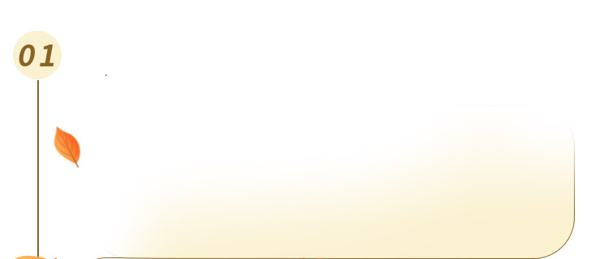
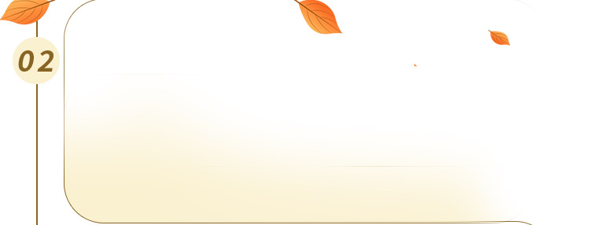
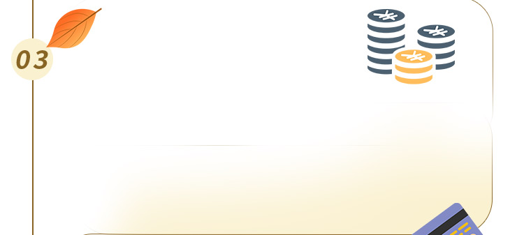
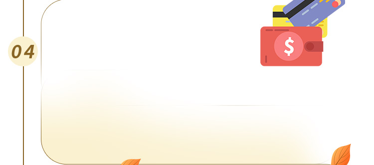
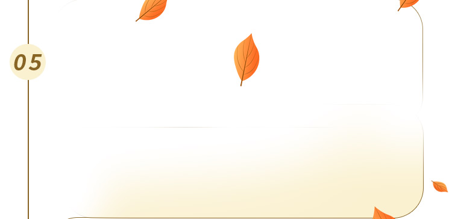
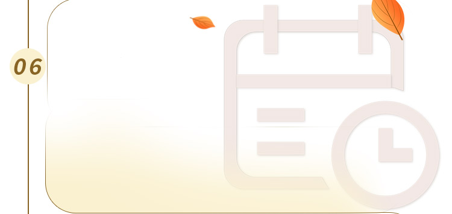
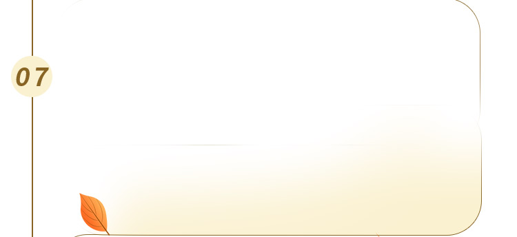
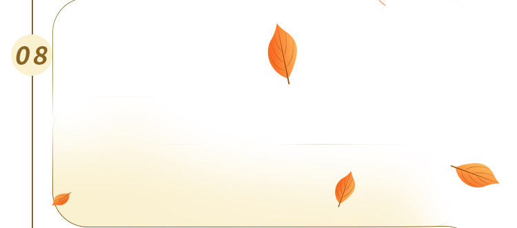
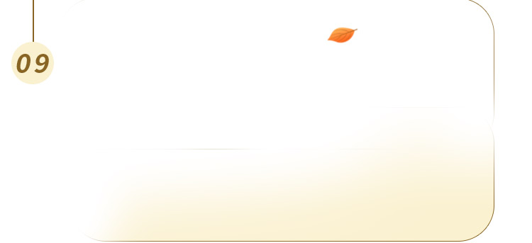

公墓销售中心： 022-xxxxxxxx
购墓流程


墓地选购流程

准备相关证件
购墓时请携带购墓人本人身份证及逝者相关证件到业务厅由专业的业务接待员带您选购墓穴。如果是第一次实地勘察墓地，携带本人身份证就可，带些须现金或者银行卡，可以为看上的墓为交纳定金。

选择墓穴
选择墓穴在购墓顾问人员的陪同下，实地勘察墓区，选择合适的墓型、墓址（几区几排几号），确定价格。客户在确定墓址后，请到业务厅，填写有关详细资料。

交付全款或定金
交付全款或定金客户在填写好表格后，支付墓穴定金，余款按协商期限内付清。选定墓穴后，预定人须至少交纳墓价款的30%作为定金，协商日期内（自定金交付日起）交齐全款。

预付期内付清全款
十五日内（自定金交付日起）交齐全款；逾期不交全款，墓位不予保留。

制作碑文小样
制作碑文小样可以在交款当天和墓地销售人员确定墓碑碑文,样式,或者请至少于“安葬日”之前15天办理碑文刻字及预约安葬日、礼仪服务等相关手续，避免影响骨灰安葬的正常进行（自选艺术墓 )。

确定安放时间及礼仪
确定安放时间及礼仪客户确定亲人安葬具体日期后，选择对应的安葬仪式，服务，确认安葬流程。请通知陵园，由陵园派专人做好各项安葬事宜，如有变动请及时提前通知陵园。

选择配套附属商品
选择配套附属商品配套附属商品一般包括：骨灰盒，防潮盒，棺床，守灵狮，香炉，相框，守灵牛，守灵象，麒麟，水晶七件套等墓地摆件。可根据需要购买。

碑文刻字
碑文刻字一般在安葬前10天左右通知墓地方，把当初确认的碑文文字按照当初定的碑文小样刻到墓碑上，碑文字体，贴金还是描金，大字小字，价格都不等从5元/字-50元/字。

落葬仪式
落葬仪式落葬在整个丧葬仪式中也是相当重要的。我们往往把它看做是整个仪式的休止符。生活中，人们总是习惯先挑选个适宜安葬的良辰吉日，再将逝者落葬于土中，入土为安！
购墓须知
须知一
客户凭火化证明或市民政局规定的六种认购寿穴的证明材料，即可购墓。
1、使用人的死亡证明、火化证明、骨灰寄存证（迁墓凭迁移证）及使用人的证件照；
2、正确填写使用人的姓名、出生、死亡的确切日期，提供申请人的姓名及联系电话；
3、碑文填写后，请仔细核对，核对无误请签字。
须知二
购墓后，办理与墓穴相关的一切事宜，均凭购墓时的整套凭证方可办理，以下事项怎么办理呢：
1、落葬手续：程序为（1）凭墓穴证开落葬单（2）凭落葬单到墓区由礼仪人员协助进行落葬。
2、加字、红改黄（或黑）字、客户住址或电话等联系方式的变更。
3、如果墓穴证书遗失，怎么办理补办手续呢？（需持所在街道居委证明及认购人、办理人的身份证，经核实后补办。
须知三
陵园墓位前不能焚烧物品，爱护绿化、讲究卫生、提倡文明安葬与祭扫，防止事故发生。一般园区都有专门的焚烧堂，供大家焚烧少量祭祀物品之用，敬请远离绿化焚烧，谨防烧裂石制品及熏黑他人墓石，以免引起纠纷与赔偿。
须知四
清明、冬至是落葬的高峰期，落葬时会产生等候现象，如果需要清明，冬至落葬，请提前准备预约。为使从容落葬，请避开落葬高峰期，预约、错时落葬。